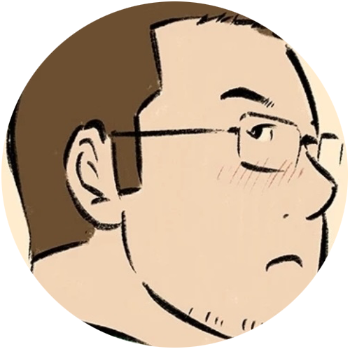

返回

来自河北的四线小城市的学生
学生党，来自河北四线小城市，爱好：捣鼓计算机硬件，服务器，捣鼓 Windows 和 Linux 等，也算是个伪技术宅吧。
平常没事干也就写写代码什么的，
别看我代码仓库了，代码质量比不过程序员（废话），
偶尔玩玩 GTA 和 Minecraft，要说玩过的 Minecraft 模组，我玩过以太 2，CaveLand，下界侵蚀，暮色，Lost Cities 失落的城市，次元门。
别的基本上就是原版加强，比如JEI，HUD优化，字体优化和材质包什么的，材质包我一般也就用和原版相近的，光影嘛..我用的 Chocapic13 的 Ultra 版本光影，就这些。
等过些时候准备入手 Red Dead Redemption （荒野大镖客） 2
音乐爱听国外电音系列，如果想听可以和我要，我目前只用网易云音乐
发现写博客也是挺惬意的一件事..
可通过以下方式联系
QQ：2145133703
邮箱：
2145136703@qq.com
自己的沙雕群：172259842（群名：沙雕组合）
BiliBili哔哩哔哩ID：
季姬请您击鸡